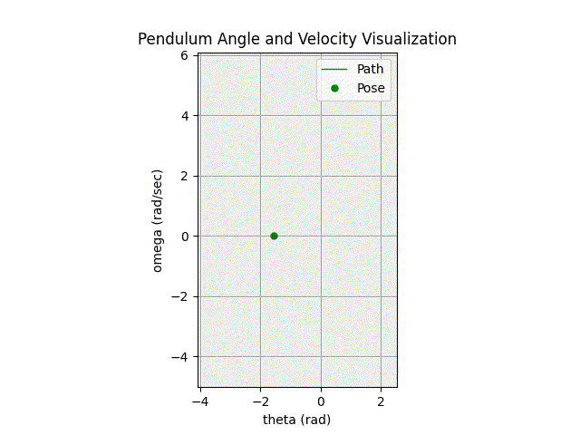
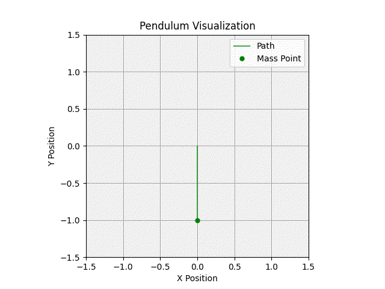
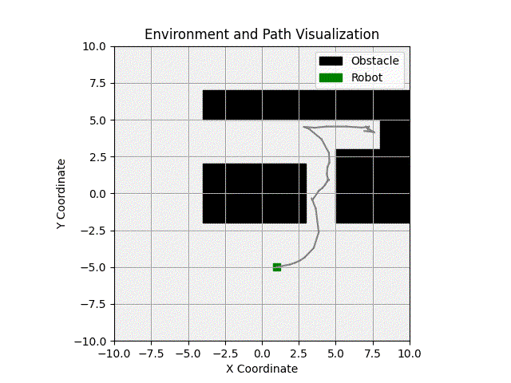
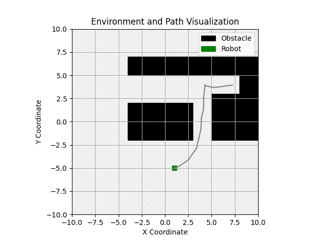
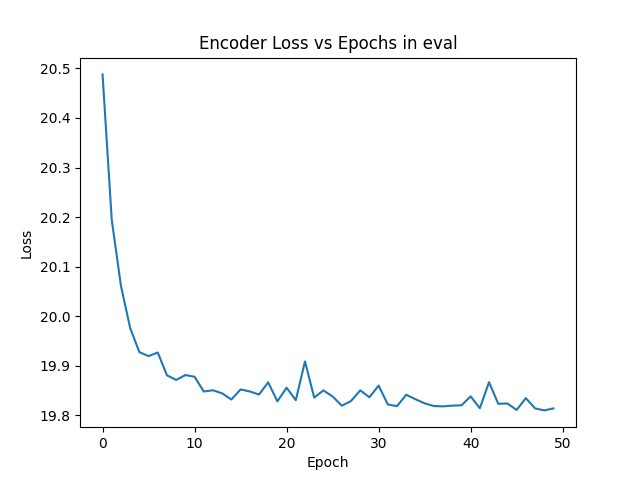
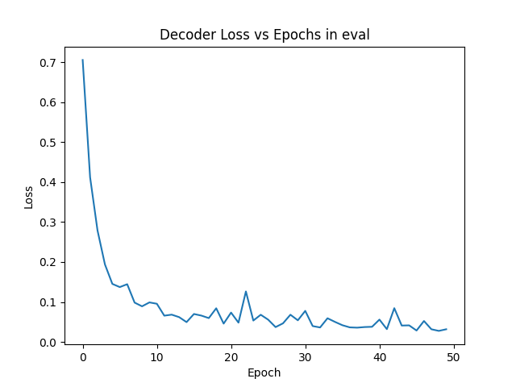
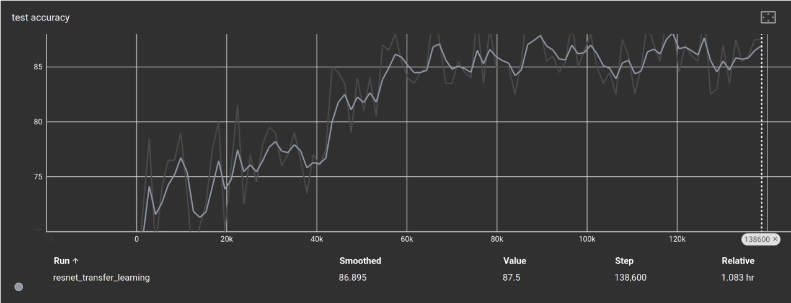
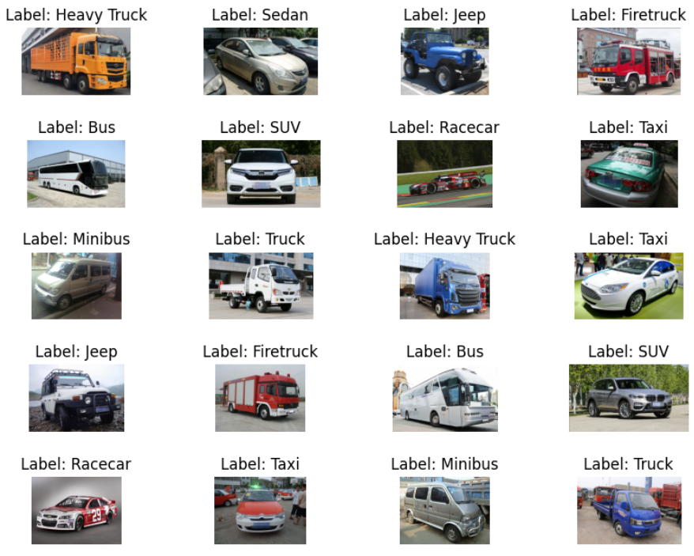

In my graduate studies at WPI, I worked on several projects. Most projects were part of course material.
MS Capstone Project | Facilitating Changeover in High Mix, Low Volume Environments
As the culmination of my WPI Robotics Engineering Masters program, I completed a capstone project over the course of a Semester.
For this project, I continued the work I did during my intership with Imagine to expand the system for more purposes.
Originally, I was looking for a way to facilitate robotic workcell changeover for Assembly operations,
but conventional Teach Pendant programming wasn't adaptable enough for that purpose. I'd learned that the easier
I can make it to change something, the more likely things will actually get changed (hence the system will
be used more). As such, I used ROS2 with an industrial robot arm to create a pipeline for simplified changeover.
In my capstone work, I was able to integrate several different use cases with real-world testing on a UR5e.
RBE 4815 Lab Development
Throughout my MS studies, I've been leading lab development for WPI's industrial robotics course (RBE 4815). When I took the course in the Fall of 2024, labs used a single ABB IRB1600 arm with
limited ways to cover industrial automation concepts. Since then, the lab has gotten two UR5e serial link arms and one Fanuc M-1iA parallel manipulator. Since the course is also intended to
introduce PLC programming, I selected a PLC and implemented a Modbus TCP communication system between all the machines in the lab. During this process, I was responsible for devising lab
activities, setting up the lab space, and creating lab documents for students to follow. I also gave a lecture on Automation Engineering, how it differs from Robotics Engineering, and
how robotics engineering can help mitigate the challenges in industrial automation.
During the course of four labs, students are taken from basic programming to more advanced workcell interaction. They learn how to use industrial cameras for part localization, interact with conveyor belts,
and create palletizing programs. The final project aims to have students apply everything they've learned in lab with no additional instruction. Through this project, students are
expected to show that they've truly learned the lab content rather than only following along with the lab document. Working on these labs has been a great way for me to practice my prior Automation Engineering
skills and learn some new ones along the way.
Compiled palletizing operations (UR5e and Fanuc M-1iA)
I designed the final project to combine all the lab components that students will have already completed with some adjustments
to suit the new purpose. The goal is to take randomly arranged cubes from one end of the system to a "pallet" on the other end.
This requires interfacing all the robots through Modbus TCP so they know things like when to stop/start the conveyors and when
there are cubes ready for palletizing. The overall control of the system, including starting and stopping the workcell,
is handled by programming on an Arduino Opta PLC, which acts as the sole Client in the Modbus Network.
Complete workcell final project demo
As an addition to the final demo, for daring teams, I figured out how to trigger a SICK PLOC2D through Socket messaging,
parse and share the data with the PLC and M-1iA, and move to locations with that information. This required a custom
URScript to transform the position into the M-1iA's world frame and convert data to ensure the float positions
are properly transferred as UINTs. On the M-1iA, I used six Group Inputs set through Modbus TCP to load the positions.
In the program, I then initiated calls for data from the UR5e (through Modbus), parsed the data saved to the Group Inputs
back into floats, and moved the robot to the position.
M-1iA part localization demo
After developing a new set of in-person labs, I developed a couple more simulation/online labs. These labs are intended to be
standalone such that an online offering of the course can use them without referencing in-person lab content. Each lab
builds into the next. Earlier labs cover basic programming, palletizing, conveyor control, and 2D part localization.
The fourth lab implements multi-robot bin picking using a 3D Area Sensor. The picking orientations aren't perfect, but the
core functionality works well. The final project is a three robot workcell simulating a bin-pick, in-motion deburring,
and palletizing automated process for a metal part. I can't show a video of that here as part of the lab is
determining which robots to use, so I don't want to give any hints in a demo video.
Simulated bin picking demo video using a multi-robot system
RBE 550 | Motion Planning
In this course, we're learning motion planning concepts and applying them using advanced methods in OMPL. Thus far, we've created programs for both geometric and
kinodynamic planning. We created custom planners and collision detection functions in C++ to suit our applications. In lecture,
we covered the many different types of planners, configuration spaces, collision detection algorithms, and task planners necessary
for a complete task and motion planner.
Kinodynamic Planning Results

Pendulum phases for torque-limited dynamics

Pendulum motion for torque-limited dynamics

Unicycle model motion with AO-RRT planner run for 5 seconds

Unicycle model motion with AO-RRT planner run for 1000 seconds
Final Project
In the final project for this course, I implemented a complete Task and Motion Planning (TAMP) pipeline in a blocksworld
environment. The TAMP must be able to construct three different planners and handle varying start states. The task planner
is implemented through Pyperplan objects, so no additional files are generated. The plan is generated through a SAT planner
from my PDDL setup. OMPL handles collision checking to verify motion plans are valid. Robust error handling compensates
for states in collision by shifting target waypoints before motion.
The system is simulated using Genesis to incorporate physics in a photorealistic environment. Sensing was abstracted
so we could focus on this course's objectives, so the environment state was read directly from the simulation. This
removes the need to handle noisy sensor readings and increases positional accuracy when sensing and moving.
Simulated TAMP for several tasks (computation time for task planning removed)
RBE 577 | Machine Learning for Robotics
RBE 577 covers Machine Learning in a robotics-focused context with most time spent on Deep Learning methods. We've learned about many different Deep Learning architectures and applied some to different
systems. First, we used a Multi-Layer Perceptron model for control allocation in a boat through an autoencoder system. We then used transfer learning with a Convolutional Neural Network to identify different types of vehicles while making use
of outside resources for training feature extraction layers.

MLP Encoder loss during evaluation

MLP Decoder loss during evaluation

CNN classification accuracy

Sample of labelling on non-dataset images
RBE 502 | Robot Controls
In RBE 502, we learn more about linear and non-linear control algorithms. We discuss Lyaponuv methods, feedback linearization,
phase plots, workspace control, manipulator trajectory control, and introduce optimal control methods like MPC and LQR controllers.
As the final project in this course, we implement trajectory generation and tracking for a small drone. We only implement and tune
a PD controller for to this end, but we experience additional simulation systems and get to experiment with the effects of different
control gains in a fast-paced control system. In the end, we were able to test our controller on a real drone following a circular
trajectory (I unfortunately don't have a video of this). The drone states in real-world testing were capture through a motion capture
system.